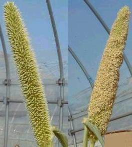
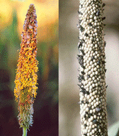
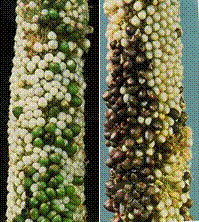
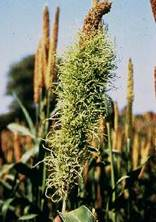
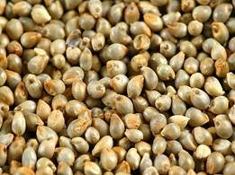
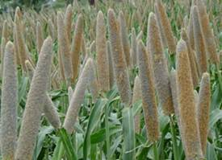

GPBR 112 :: Lecture 13 :: SEED PRODUCTION IN PEARL MILLET

Bajra is common minor millet of India with wider industrial and household utility. It is used a feed, food and raw material in soft drink industry. Botanically it is known as Pennisetum typhoides L. and belongs to the family poaceae.
Floral biology
It is a highly cross-pollinated crop. The pollinating agent is wind. The flowers are protogynous. The spike emerges about 10 weeks after sowing, The styles begin to protrude 2-3 days later first at the top of the inflorescence and proceeds. They take two days to complete the entire spike. Exerted stigma remains receptive for 12-24 hours. Anthers usually emerge after the styles are dry. The anther emergence starts from middle of the spike and proceeds upwards and downwards. Anthesis occurs throughout the day and night with the peak between 8.00 p.m. to 2.00 a.m.
Protogynus

Stigma Anther
Popular variety : co7, co 8
Synthetics : If more than 5 parental lines are combined ,which are having general
combining ability e.g. CO 7, ICMS 7703
Composite: 3-5 inbreds with no general combining ability are mixed and
multiplied. WCC 75.(ICRISAT).
Land requirement
Seed field offered for certification should not have been grown with bajra in the previous season. However if it was grown, the field should be irrigated 3 weeks before sowing to destroy the germinating seeds.
Field Standards for isolation
Bajra field should be isolated from contaminants as follows
Contaminants |
Minimum distance(m) |
|
Foundation stage |
Certified stage |
|
Fields of other varieties |
400 |
200 |
Fields of same variety not confirming to |
200 |
100 |
In bajra differential blooming dates for modifying the isolation distance is not permitted
Selection of Seed
- For production of foundation seed, breeder seed is used as the base material while for certified seed, foundation seed should be used as the base material .
- The seed used should be from authenticated source with tag and bill.
- The required seed rate will be 18kg /ha or 3-4kg/ acre.
Presowing seed treatment
- The seeds are given with any one of the seed treatment or in combination.
- Seeds are soaked in 2% KH2PO4 or 0.5% brassinolide for 16h with a seed to solution ratio of 1:0.06 and are dried back to their original moisture content of 8-9% .This management could be used both for dryland agriculture as well as garden land.
- As an ecofriendly treatment seeds are also fortified or hardened with 1% prosopis and pungam leaf extract for 16h with a seed to solution ratio of 1:0.06 and are dried back to their original moisture content of 8-9%
- Seeds are treated with metalaxyl @6g/kg of seed to prevent the infestation by downy mildew.
- Seeds are also treated with 5% carbofuran 3G to protect the seed from shoofly infection. Seed treatment with chlorpyriphos @4 ml /kg is also recommended against the attack by shoofly.
- Seeds are dry dressed with bavistin @2g/kg of seed to protect against seed borne pathogens and soil borne pathogen.
- Seeds are also treated with azospirillum @50g/kg of seed to fix atmospheric N. Any one of these treatment or combination of treatment is adopted for better productivity.
- On adoption of sequence of treatment physiological should be followed with physical seed treatment.
Sowing
- The seed are sown at a spacing of 45 x 20 cm at a depth of 2-4cm as the plant has adventitious root system.
- In some places seeds are also raised in nursery and transplanted to the main field at an age of 20 -25 days.
- In the main field seeds are sown either in ridges and furrows or under beds and channels.
- The seedlings are thinned or transplanted at 20-25 days after sowing and gapfilling should be done 10-15 days after sowing.
Nutrient application
- At last ploughing apply 12.5 tonnes of compost per hectare. The fertilizer requirement of seed crop is 100:50:50 kg of NPK, in which 50:50:50 kg /ha of NPK is applied as basal, while 50kg of N is applied after 30-35 days after sowing at tillering phase .
- The seed crop is also sprayed with 2% DAP at primordial initiation stage and twice thereafter at 10 days interval to enhance uniform flowering and increased seed set.
Weeding
Application of atrazine @ 10ml per litre as pre-emergence herbicide controls the growth of weeds upto 20-25 days. One hand weeding at the time of primordial initiation keep the field free of weeds. Weeding after boot leaf stage is not economical and shade will also minimize the weed flora. On organic production, 2 hand weeding at seedling stage and other at boot leaf formation will keep the field weed free.
Irrigation
- The crop should be irrigated once in a week for enhanced seed set and formation of bolder grains .
- The critical stages of irrigation are primordial initiation stage, vegetative stage ,milky and maturation stage. If the irrigation is withheld in these stages seed set will be poor and seed size will be reduced.
Pest and disease management
Common pests |
Management techniques |
Shootfly |
Monocrotophos 0.03% |
Stemborer |
Rogar 0.3% |
Downy mildew |
Metalaxil @ 500gor ridonil MZ WP 2@2kg/ha or Mancozeb@ 1kg/ha. |
Earhead bugs |
Endosulphan 0.07% |
Black mould |
Endosulphan 0.07% + Bavistin @10g /lit. |
Green ear /Smut/Ergot |
Spray carbendazim @500g/ac in 2stages 10 and 50 % flowering |
Rust |
Spray with wettable sulphur @2.5g/ha on initiation of symptom and 10 days thereafter.. |
Green ear Smut Ergot

Roguing
It is specific to seed crop and is done from seedling stage to harvesting stage based on the phenotypic characters. Off types can be identified through stem colour, plant structure, number of leaves, auricles, nodal colour, grain colour etc. The field standard for seed crop is as follows
Specific standard: These are verified at the final inspection
Factor |
Maximum permitted (%) |
|
FS |
CS |
|
Off types at any one inspection and after flowering |
0.050 |
0.10 |
Plants infected by downy mildew/ green ear disease at |
0.050 |
0.10 |
Ergot earheads at final inspection ** |
0.020 |
0.040 |
Earheads infected with grain smut at final inspection |
0.050 |
0.100 |
** Even if the infection is within the limit seeds are graded with brine solution to become eligible for certification.
Seed Certification
Number of Inspections
A minimum of three inspections shall be made as follows:
1. The first inspection shall be made before flowering preferably within 30 days after planting in order to verify isolation, volunteer plants, off types, downy mildew incidence and other relevant factors.
2. The second inspection shall be made during 50% flowering to check isolation, off types, downy mildew incidence /green ear and other relevant factors
3. The third inspection shall be made at maturity and prior to harvesting and in order to determine the incidence of downy mildew /green ear disease, ergot, grain smut and to verify true nature of plant and other relevant factors
Pre harvest sanitation spray
Spraying of endosulphan @ 0.07% and bavistin@10g /lit 10 days prior to harvest prevent the seed weevil (Sitophilus oryzae) infestation at storage.
Harvesting
The crop attains physiological maturity 30-35 days after 50% flowering and the seed moisture at this stage will be around 25-30%. This stage can be easily be identified by the formation of dunken layer at the place of attachment to the ear head. The ear heads are harvested when 80 % of the ear heads are physiologically matured, where the moisture content will be around 20 %.The crop is commercially harvested as once over harvest but harvesting of ear heads as 2or 3 picking will preserve the seed quality as matured seeds are not over exposed to the changes in environmental conditions.
Special techniques
Selection of first formed 5-6 tillers for seed purpose ensures seeds quality. Ear heads also exhibit positional polymorphism where seeds of middle are better in seed quality. This type of selection will be useful in long term storage of seeds
Threshing
The ear heads are dried under sun and threshed with fliable stick for extraction of seeds. The moisture content of seed at the time of threshing will be 15-18%.On large scale production LCT threshers are used, but care should be given to avoid mechanical damage, which in turn will reduce the seed quality and storability.
Drying
The seeds are dried to 8 to10 % moisture content either under sun or adopting mechanical driers for long term storage as the seeds is orthodox in nature.
Processing
Mechanical grading can be done with cleaner cum grader, which will remove the undersized immature and chaffy seeds .The middle screen size should be 4/64” round perforated sieves. The size can vary depending on the variety. (For WCC 75 5/64”sieve is used).

Seed yield: 3500- 4000 kg/ha
Seed treatment
The seeds are infested with several storage pests, to protect against these pests the seeds are given protective treatment with bavistin @2g/kg of seed with carbaryl @200mg/kg of seed as slurry treatment. Bifenthrin @5mg /kg of seed is also recommended for better seeds storage
Seed packing
Seeds are packed in gunny bag for short term storage while in HDPE and polylined gunny bag for long term storage.
Storage
The treated seed can be stored up to 12 months provided the seeds are not infected with storage pests. Seed can be stored up to 3 years if the seeds are packed in moisture containers and are stored at low temperature .The godown should be kept clean as the possibility of secondary infestation with Trifolium (red flour weevil ) is much in these crop. The major problem in storage is incidence of grain weevil which will powder the seed material in a short period.
Seed standard
The processed seed should have the following seed quality characters both for certification and labeling.
Seed Standard
Factor |
Standards for each class |
|
FOUNDATION |
CERTIFIED |
|
Pure seed ( maximum) |
98.0% |
98.0% |
Inert matter(maximum) |
2.0% |
2.0% |
Other crop seed (maximum) |
10/kg |
20/kg |
Weed seed |
10/kg |
20/kg |
Ergot, sclerotia, seed entirely or partially |
0.020% |
0.040% |
Germination ( Minimum) |
75% |
75% |
Moisture (maximum) |
12.0% |
12.0% |
For vapour proof container (maximum) |
8.0% |
8.0% |
Mid storage correction
The seeds loose their quality during storage due to deterioration and pest infestation, when the germination falls below 5-10 % of the required standard the seeds are imposed with midstorage correction, where the seeds are soaked in double the volume of 10-4 M solution of potassium dihydrogen phosphate (3.6mg/lit of water) for 6 hours and the seeds are dried back to original moisture content (8-9%).
HYBRID SEED PRODUCTION
Breeding Technique for hybrid
seed production : Cytoplasmic genetic male sterility
system (CGMS)
History of bajra hybrid
Seed production : The first report on CGMS line was
made by Burton and his co workers at
Tifton Georgia USA. The line is
Tift 23A.
Popular hybrid
Hybrid |
Female |
Male |
KM 1 |
MS 5141 A |
J 104 |
KM 2 |
MS 5141 A |
K 560 -D-230 |
X4 |
MS 5141 A |
PT 1921 |
X5 |
PB 111A |
PT 1921 |
X6 |
732 A |
PT 3095 |
X7 |
111A |
PT 1890 |
H B1 |
Tift 23A(USA) |
BIL -3B |
HB 3 |
Tift 23A(USA) |
J 104 |
HB 5 |
Tift 23A(USA) |
K 559 |
UCH 11 |
732 A |
PT 3075 (TNAU) |
COH(cu) 8 |
732 A |
PT 4450 |
Commercial Hybrid Seed Production
Isolation : Foundation seed : 1000 m
Certified seed : 200 m
Season : Irrigated : March – April, June - July
January – February
Rainfed : October – November
Seed rate : A line : 6 kg ha-1
B line : 2 kg ha-1
Main field preparation : Ridges and furrows
Planting ratio : Foundation Seed : 4 : 2
Certified Seed : 6 : 2
Pusa 23 - 8 : 2
Border rows : Foundation Seed : 8 (B line)
Certified Seed : 4 (R line)
Spacing : A line : 45 x 20 cm
B line : 45 x solid row.
Nursery : Seedling can also be raised in raised bed nursery and can transplanted to the main field at 20-25 days of aging.
Manures & Fertilizers
Nursery : 750 kg / 7.5 cents for transplanting in one ha.
Mainfield : Compost : 12.t ton/ha NPK 100:50:50 kg ha-1
Basal : 50:50:50 kg ha-1
Top : 50:0:0 kg ha-1 (At tillering phase
Foliar spray : DAP 1% at peak flowering to enhance flowering and seed set.
Steps for synchronization of flowering
- Withholding irrigation
- Application DAP 1%
- Staggered sowing
- Jerking
Jerking
It is done 20-25 days after transplanting or 30-40 days after direct sowing. The early formed earheads of the first tillers are pulled out or removed which will result in uniform flowering of all the tillers.
Specialty with bajra in synchronization
The synchronization problem is less in bajra due to
- Tillering habit
- Supply of continuous pollen
- Lesser pollen weight
- Flight capacity of pollen
- Pollen viability & stigma receptivity are longer.
Roguing : Done in both lines
• A line : seek for offtypes pollen shedder and
partials
• R line : Seek for early flowering plants,
rouges and diseased plants.
Character of offtypes : Variation in leaf colour, leaf waviness,
grain colour earhead, shape, size, etc.
No. of field inspection : Three
• Seedling stage
• Tillering stage
• Grain formation stage.
Field standards
Standards |
Maximum permitted (%) |
|
FS |
CS |
|
Offtypes |
0.05 |
0.10 |
Pollen shedders |
0.05 |
0.10 |
Downy mildew diseased plants |
0.05 |
0.10 |
Earheads affected by ergot |
0.02 |
0.04 |
Harvesting Technique : • Due to tillering habit, harvest the
panicle / earhead in 2 picking (to
avoid delayed harvest)
• Select 5-7 tillers for seed purpose.
Processing : • Grade with 4/64” round perforated
metal sieve as middle screen
• Use OSAW cleaner cum grader
Seed Treatment : Thiram / Bavistin @3g kg-1 seed
Seed storage : • Cloth bag for short term storage
(12 months)
• 700 gauge polyethylene bag – long
term storage (> 24 months)
Mid storage correction : HDH with Na2PO4 10-4m for 4h.
Seed standards
Standards |
Permitted (%) |
|
FS |
CS |
|
Physical purity (Maximum) |
98 |
98 |
Inert matter (Maximum) |
2 |
2 |
Other crop seed (Maximum) |
10 / kg |
10 / kg |
Weed seed (Maximum) |
10 / kg |
10 / kg |
Ergot effected seeds (Maximum) by number |
0.020 % |
0.040% |
Germination |
75 |
75 |
Moisture content - Moisture pervious |
12 |
12 |
Seed yield : 3200 - 3250 kg / ha
| Download this lecture as PDF here |